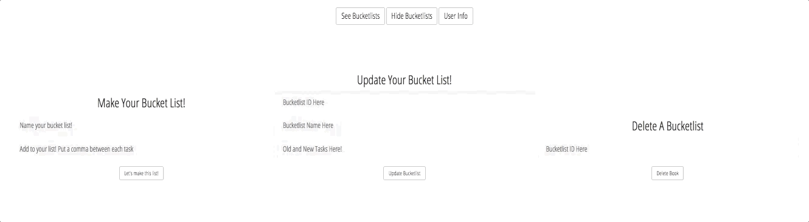

Bucket List
A JavaScript App using AJAX to access a Ruby on Rails JSON API


About
I created a full stack, single page application where a user can sign up and create, see, update, and delete their own bucket lists. Growing up, I loved making bucket lists with my friends, and I thought this would be a fun idea to turn into a website. Before coding, I created an ERD, wireframe, and user stories. The back end was made using Ruby on Rails. The front end was made with JavaScript, jQuery, HTML, CSS, Bootstrap.
After completing the planning, I made the back end using Ruby on Rails and a PostgreSQL database with a one to many relationship, where one user can have many bucket lists. Work on the front end began with styling bucket lists.
In action
Using jQuery, I styled example bucket lists where users can add and cross off tasks. However, they will not be saved. These example lists are displayed on the welcome screen.

Once signed in, users can create, update, and delete bucket lists that are connected to the back end using AJAX. To create a bucket list, users can enter a name for the list and then add items on their bucket list, separating each with a comma.
Users can delete and update their bucket lists after they are created by using the bucket lists ID.

Technologies
Ruby | Ruby on Rails | Javascript | jQuery | AJAX | CSS | HTML